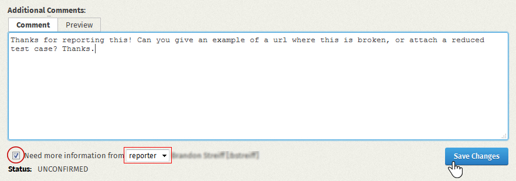

Time to have some fun.
Start your training mission:

Before we begin...
Do you have an account at http://bugzilla.mozilla.org?
Create a bugzilla.mozilla.org account
You will need to confirm your account and then log in.
Start your training mission:
Bug Triaging is the process of moving bugs logically from state to state, so they get resolved in an efficient and easy-to-comprehend manner.
Go through the bugs in the Untriaged component which have the status UNCONFIRMED. Choose a bug from the list.
Refine the search to the bugs of your OS. Read the summaries to understand what the bugs might be about. This will help you choose one to triage. You can sort by OS or edit the search to create a new query. The edit search link is at the bottom of the page. Give it a try!

Read the bug. Read its summary, description, comments. Do you understand it enough that you know how to try to replicate the bug?
Leave a comment to ask for more information about the bug. You may want to use the needinfo flag.
Please cc lhenry@mozilla.com on the bug, so that I know you participated in this training mission! Thanks!
Near the end of the bug page, after the comments, there is a checkbox labelled needinfo. When you check it, you can select the bug reporter, or manually add an email address to ask a person for more information.

Check to see if the bug is a duplicate of an already existing bug. Open a new tab, and search for other bugs that use the same keywords and describe the same problem.
Here is a detailed description of how to detect duplicate bugs. If you're not sure if it's a duplicate, explain what you think in the comments and include the bug number of a possible dupe.Close the Bug as RESOLVED DUPLICATE. You should enter the duplicate bug number. Keep whichever bug was reported first, and has good information such as comments and attachments on the bugs. Be sure to thank the bug reporter and be polite; we want them to know we appreciate their efforts, even if the bug report is not needed.
Please cc lhenry@mozilla.com on the bug, so that I know you participated in this training mission! Thanks!
Check if it's a support question. Many bug reports are not about bugs but are for common issues answered in the Mozilla support forums.
Is the reporter asking questions about how to use Firefox, or reporting a vague problem like Firefox being slow, or malware popups?
Let the reporter know where to find help. Add link to support Close the Bug as RESOLVED INVALID.
Please cc lhenry@mozilla.com on the bug, so that I know you participated in this training mission! Thanks!
Keep on doing triaging and check if the bug needs a testcase
Ask the reporter for a reduced test case code or a URL. You could generate a test case and attach it.
A testcase can be an image, an .html page or an url depending on the specific bug. For some bugs in web pages, you can create the simplest possible page that triggers the bug. It can be handy to use a tool like http://jsfiddle.net.
Reproduce the scenario reported from the bug on the same Firefox version, on the same OS or a different one.
Can you reproduce the bug on the same OS?
Comment that you can replicate the bug, add info you think can be useful; Add the build id of the firefox version and user agent used
If it is a Mozilla bug mark it NEW. Assign the bug into a product and component, orif you aren't sure where it belongs, tag it needs-component. Tag the bug with other triage tasks that may be needed.
For example User Agent: Mozilla/5.0 (Macintosh; Intel Mac OS X 10.8; rv:23.0) Gecko 20100101 Firefox/23.0 buildID :20130708202947 (you can find the buildID typing about:config in the url bar and search for buildID).
Ask the reporter need-info (especially if it's an old bug ) to see if it's still valid and tag as needs-replication in the whiteboard
or resolve it as WORKSFORME or tag it as need-replication
Can you reproduce the bug on a different OS?
Add comment and eventually change the bug platform ( Platform field of bugzilla)
tag as needs-replication in the whiteboard and leave a comment
Created by Josh Matthews. Training Mission content added by Tiziana Sellitto. Patches are welcome on github.